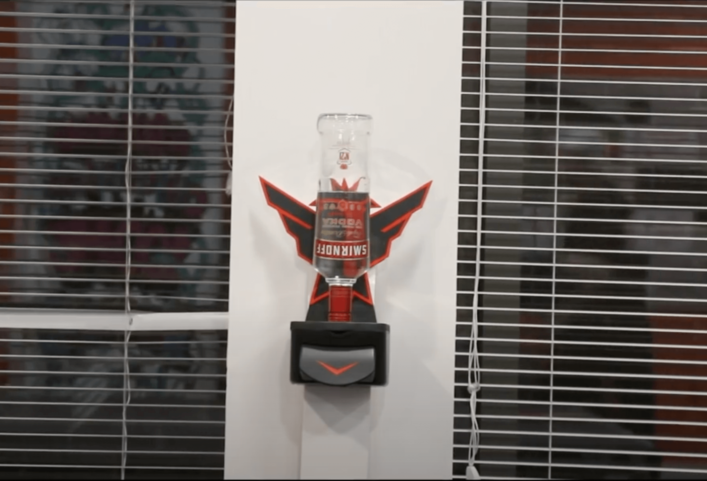
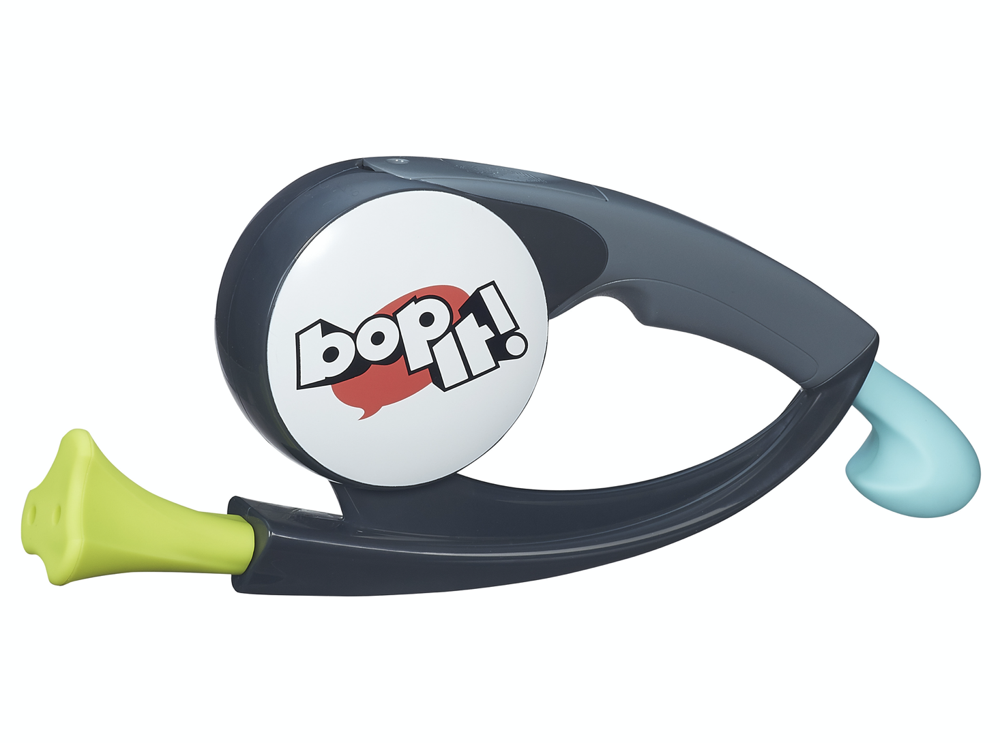
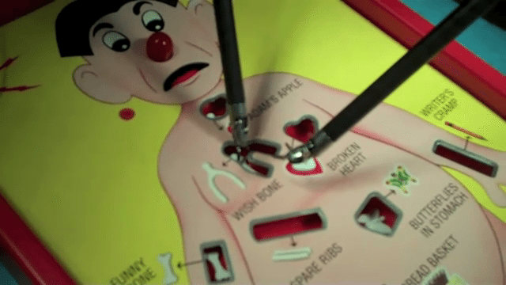
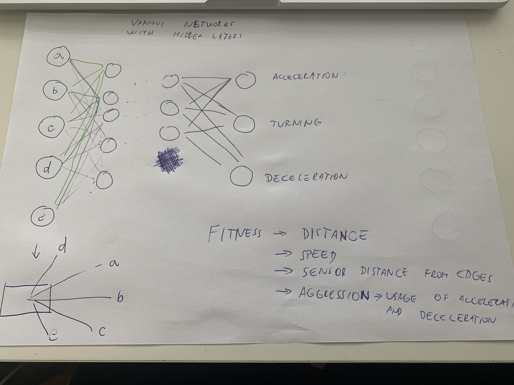
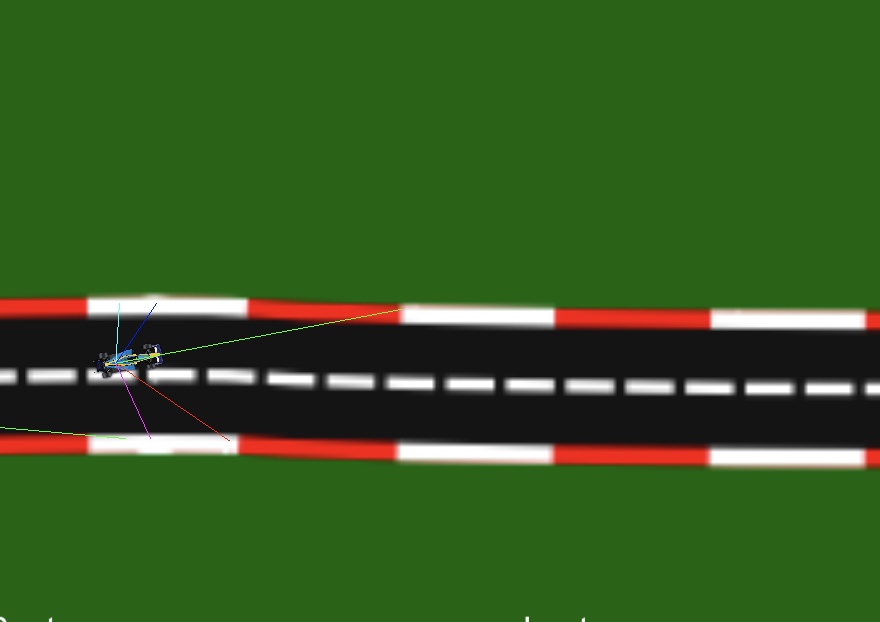
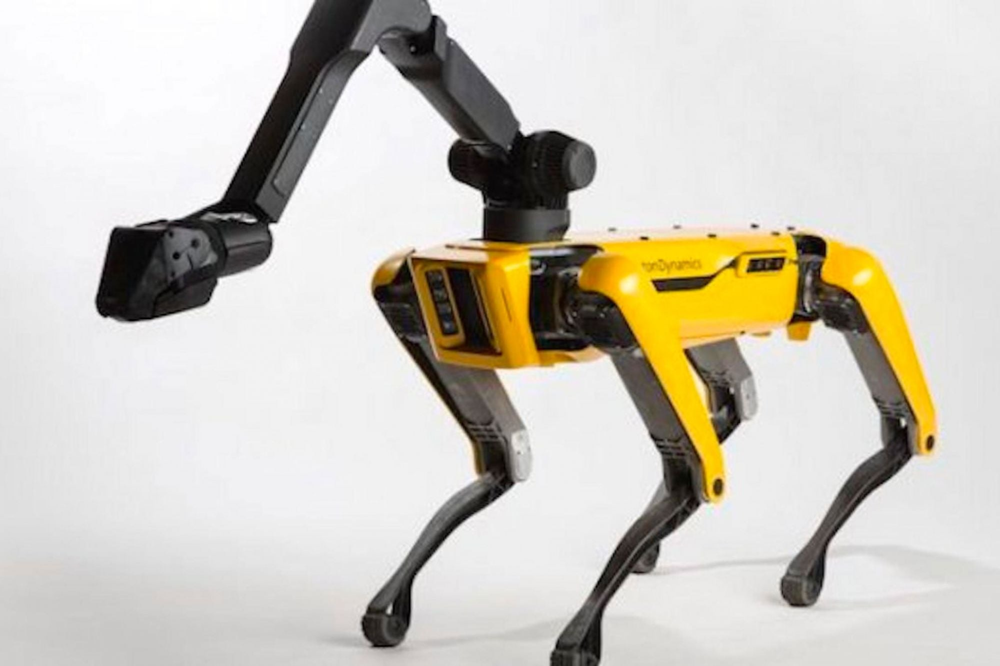
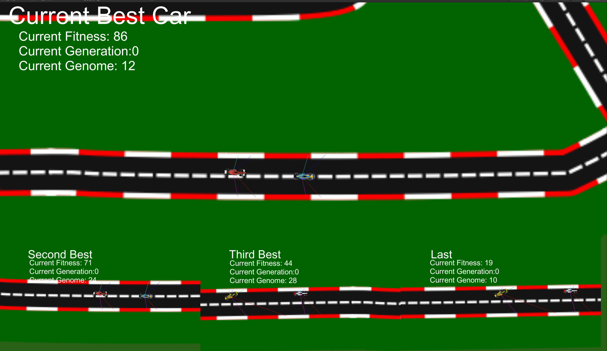
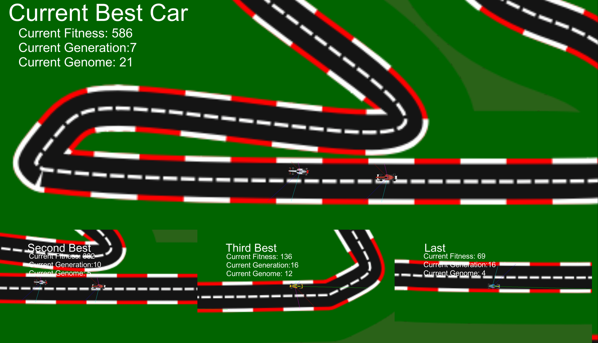

Research
I really struggled with starting out with this challenge, because I found it super-vague, and did not even know where to look for a suitable "playful interaction". Nevertheless, I slowly went through a few projects, and found ones that I really liked.
Fun Sanitizer
The Fun theory hand sanitizer is a project by Adi Kujal, who made it for a Design for industry course on Northumbria University. Its quite a simple idea - putting a hand sanitizer in a bottle of Vodka, which makes it stand out, sparks curiosity and makes more people use the sanitizer.
I really like the simplicity, yet cleverness of the project. It catches attention and makes the surrounding people curious about the contents of the bottle, so they use it for hand sanitation. I think it really entails the idea of Fun Theory and playful interaciton, in a very simplistic, but effective way.
Slow Games
Some time ago, I came across this beautiful idea of Slow Games. Now I again saw it in the Inspiration channel on Teams, and I liked it very much, so I put it in my Research. It is a neat proect by a designer Ishac Bertran from Barcelona. He created a simple and powerful concept of Slow frequecy games - where you really have to slow down to play the games.
I really like that it takes something that is traditionally seen as a way to make time pass more quickly - games - and makes them into a slow-paced, even artistic object. You play the game every day and have to wait for 24 hours for your move to take place. Its a nice thought-provoking project that challenges you to stop rushing and enjoy this day-by-day interaction. It also makes the game even more rewarding, and I can imagine that with time, the value the owner puts to the game is very high, as it took them so much time to get some progress.
Pizza Hut Interactive Pizza table
This concept was made as a collaboration with Pizza Hut and Chaotic Moon Studios. It showcases a playful way of building your desired pizza, offering a wide range of customization, while making the process more fun, and making it definitely clear for the chef to know what exactly you want.
Even though it's just a concept, I really like the idea, as it makes your wait for the food much more enjoyable, by visualizing the process of building your own pizza, and making you more involved. This adds a value to the final product, and may persuade some customers to go to that pizza place over any other. I would love to try this out, so I can see that the aim of catching attention and attracting customers really works.
Tinkering
I did not have many ideas on where to start, so I just decided to play around with Arduino and make some small fun interactive projects.
Push-up brothers
I really wanted to play around with servos, so I tried out several different ideas, before settling for this - "push up brothers". One servo is controlled by the computer - making one of the brothers tirelessly do push-ups, whereas the other one is controlled by the user with a proximity sensor - the faster the player pushes back and forth in front of the sensor, the faster their push up brother works out. I think its a nice little silly project, and it was fun to join Arduino with some arts & crafts to create the servo-powered stick figures.
Bop It! low-cost version
Next, I was a little bit more inspired into doing some more interactive game, so I tried making my own Bop It! game. I used two aluminium capacitive sensors, a light sensor and a button, and hooked them up using Arduino and Processing. The random selection of the next move is done in Processing, which also checks whether the player did the right move, and according to that increases or decreases their score. It is quite fun, but it does not always react immediately, especially with the light sensor.
Low-cost Operation game
For the third tinkering showcase, I was inspired to make a similar playful interactive game to Operation. I cut out a maze into an aluminium foil, set up a capacitive touch function and made a screen in processing that informs the player whether they can continue or not. The game requires the player to have one hand on the aluminium foil, and to move the spike with the other hand through the maze. I really like that it is super-simple to set up, yet a quite innovative use of the capacitive touch function Arduino provides.
Design and Build
Formula Neural Network
For the challenge, I combined my learned knowledge from multiple sources and tutorials to create a neural network that would learn over several generations to drive through any course it would be presented with. I set up a scheme with five inputs from sensors, and three outputs - acceleration, deceleration and turning. The fitness of the network would be evaluated on the distance travelled, speed, sensor distance from edges, and aggression - how much does the formula accelerate and decelerate. Here is a diagram I made for visualizing my vision:
In the end, I ended up making a customizable 4-formula set-up, where I put four different genetic managers with different emphasis on distance, speed, sensors and aggression. They also have different multipliers for the speed, deceleration and different amounts of Neurons and Neuron layers. This results in various reactions from all four formulas - some are really good at one track, while they struggle on other tracks. It also highly depends on chance - since the evolution is highly randomized, each run of the simulation is different, but over time, the formulas should learn how to navigate any course. I think my product relates to the challenge greatly, as it really simulates a "brain" - the four artificial formula creatures are all thinking on their own and figuring out the track based on the fitness of each network and generation.
The final product results in four formulas with different approaches - some are slow and steady, others give emphasis on speed (but in some runs pay the price of not being able to get thourgh the first turn). Since the artificial network learns from scratch every time it is engaging to see each run, and see how fast each formula can get through the track.
Showcase
Reflect
Artificial Creatures and Affective computing in general and my vision of wearables in the future
I think that artificial intelligence has a real future in our world, seeing that it can easily evolve and teach itself, and is better equipped for not making "human" mistakes (in driving etc.). Additionally, artificial creatures that have a less serious objective, and those that use affective computing to "feel alive" will also definitely imrove and have a large impact on various industries such as games, entertainment, movies, but also serving as pets or helpers. I think that if we ever create a real artificial intelligence, machine learning and affective computing will be at the core of the project, as they provide a strong foundation for great progress.
My final product
I am happy with my final product. When starting the challenge, I set out to learn more about neural networks and machine learning, which is exactly what I ended up doing with my challenge. I programmed and created my first neural network using C# and Unity, which turned out to be not as complicated, as one would expect. I tried out the final product on different circuits, just to check whether it really works - whether the AI really learns, and found that it does indeed with each generation get better at steering and knowing what to do. I think I could improve upon this by figuring out how to make the computer TEACH itself that going forward is the desirable outcome (as with my case, the fitness increased also if the formula was able to turn around and go backwards, or if it found a track wide enough to drive in circles - so that is one area I would improve in the future).
My experience using this technology
I found neural networks really interesting also prior to the HCI course, so I was really happy when I found that I would be able to study them in more detail. I was surprised at the fact that it is not that complicated to create a neural network, once you have some grasp of multi-dimensional arrays, and you understand how the network's hidden layers work and operate. I sometimes had big frustrations when figuring out how to make the formulas do what I wanted them to do, and I even failed with teaching them that forward = desirable, and going in circles does not increase fitness(as I mentioned before, this is somehting I would improve in the future), I tried out a lot of solutions, but just was not able to crack it in time. Overall, my experience was positive, and I'd love to learn more about machine learning, but also the other topics of this challenge - affective computing, artificial creatures or even cellular automata.
